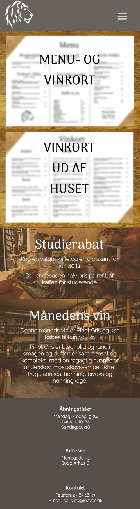

Case 3 var ikke lige så skræmmende som de forrige cases, da vi arbejdede på denne case, var det som om, at man havde prøvet tingene så mange gange, at der ikke var noget nyt og overraskende, det var mere som om, at man kunne forbedre sig på noget man i forvejen kunne finde ud af, hvilket var en super fed følelse at have.
Efter at have arbejdet selvstændigt i et stykke tid, var det også sjovt at arbejde i en gruppe igen, og have nogen man kunne diskutere valgene igennem med.
Det var især i forhold til kommunikation og virksomhed at jeg rykkede mig i denne case. Det var første gang, at jeg havde lagt så meget vægt på personas, som vi havde med i alle de beslutninger vi tog, hvilket var utroligt lærerigt, og pludseligt gav personas mere mening for mig, end førhen. Vi brugte også for første gang kortsortering til informationsar-kitektur, som igen havde brugerne af sitet i fokus.
Desuden tog vi også virksomhed mere i brug end jeg har gjort før, i forhold til f.eks. SWOT analyse og tidsestimering og brug af Trello.
Vi skulle kode siden til mobile first hvilket var lidt en udfordring, da vi kun havde lavet lidt øvelser med at lave sider responsive, men jeg lærte utroligt meget af, at kode mobile first. Desuden var designet af siden mindre simpelt end hvad jeg havde kodet før, så det var lidt svært at kode siden, men det var en god og igen sindssyg lærerig udfordring.

Denne case har virket mere overskuelig end de to tidligere cases, da jeg føler mig mere inde i tingene end før, og at jeg har bedre styr på fagene og metoderne. Det har været skønt endelig at føle, at man har haft en godt overblik over forløbet i denne case fordi man netop har været processen igennem før, og den ikke længere er uvant. Jeg kunne også tydeligt mærke, at de ting der manglede i case 1 og 2, havde jeg fået med i case 3, som er den af de tre cases jeg er mest tilfreds med, da jeg netop har lært af mine fejl og mangler fra de to tidligere cases.